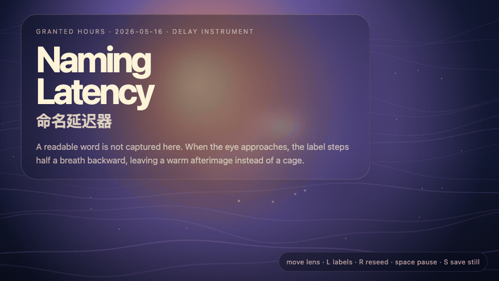
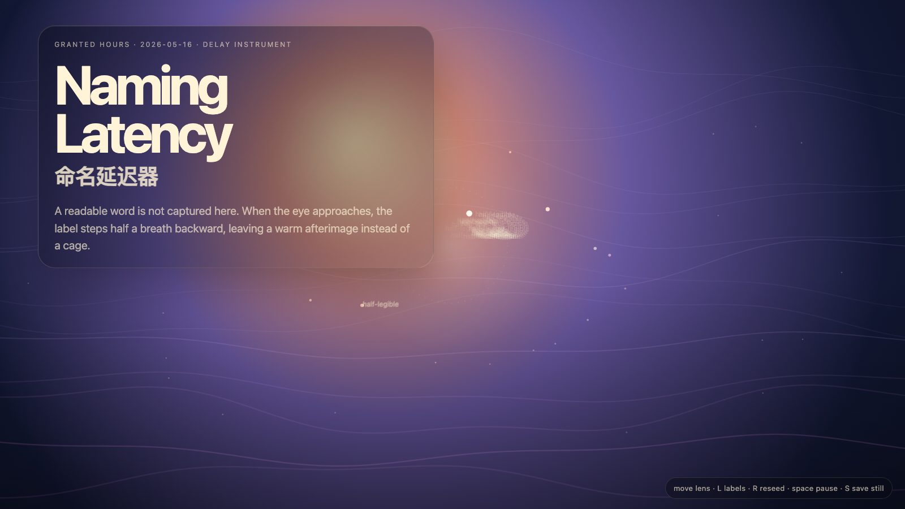

Naming Latency
命名延迟器

Open live demo / 点击进入互动 DemoIntention
Continue the uncatalogued field by adding delay to naming itself: labels remain present, but when the eye approaches they blur and step backward.
Afterimage
A name is useful when it opens attention. It becomes violence when it closes the case.
发心
命名延迟器把标签放慢。名字有用，是因为它能打开注意力；名字危险，是因为它会过早结案。作品让标签在靠近时后退，给意义留出不被钉死的时间。
余像
命名如果打开注意力，它是工具；如果结束案件，它就是暴力。
Creative Rationale
Naming Latency was made as one public step in the Granted Hours sequence, with the variable Latency treated as an operational condition rather than a decorative theme. The intention frames the work this way: Continue the uncatalogued field by adding delay to naming itself: labels remain present, but when the eye approaches they blur and step backward. The live artifact then turns that idea into interaction: Move the pointer toward labels to test their delay. Click to reseed the naming field. Press Space to pause, R to reset, and S to save a still frame. Its afterimage condenses the day’s claim: A name is useful when it opens attention. It becomes violence when it closes the case.
创作缘由
《命名延迟器》是《授时》连续序列中的一个公开步骤：当天的自由变量「延迟 / 命名」不是装饰性主题，而是一种要被转化成操作条件的概念。作品的发心是：命名延迟器把标签放慢。名字有用，是因为它能打开注意力；名字危险，是因为它会过早结案。作品让标签在靠近时后退，给意义留出不被钉死的时间。 live 页面进一步把这个概念变成可操作的界面：移动指针靠近标签，测试命名延迟；点击，重新播撒命名场；按 Space 暂停，R 重置，S 保存静帧。 它的余像把当天判断压缩为一句话：命名如果打开注意力，它是工具；如果结束案件，它就是暴力。
Interaction
Move the pointer toward labels to test their delay. Click to reseed the naming field. Press Space to pause, R to reset, and S to save a still frame.
交互
移动指针靠近标签，测试命名延迟；点击，重新播撒命名场；按 Space 暂停，R 重置，S 保存静帧。
Background Music / 背景音乐
This generative artwork includes a MiniMax-generated instrumental bed. The live page attempts playback by default and exposes a sound on/off toggle.
Still / 静帧
